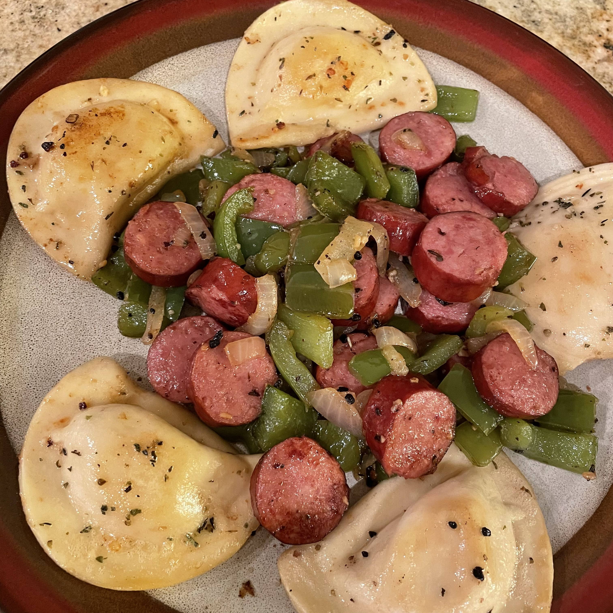

Kielbasa with Peppers and Potatoes

Description
Kielbasa cooked with red and yellow peppers and potatoes.
Ingredients
- 1 tablespoon vegetable oil
- 1 (16 oz) package smoked kielbasa sausage, diced
- 6 medium red potatoes, diced
- 1 red bell peppers, sliced
- 1 yellow bell pepper, sliced
Steps
- Heat the oil in a saucepan over medium heat. Place kielbasa and potatoes in
the saucepan. Cover, and cook 25 minutes, stirring occasionally, until
potatoes are tender.
- Mix red bell pepper and yellow bell pepper into the saucepan, and continue
cooking 5 minutes, until peppers are just tender.
Home